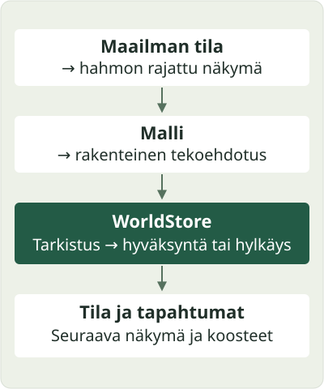

Miten maailma toimii?#
Arkkitehtuurin keskeinen raja kulkee ehdotuksen ja toteutuneen tapahtuman välillä. Hahmon teksti, aikomus tai muisto ei saa samaa asemaa kuin moottorin hyväksymä muutos.
Yhden teon reitti#

- Ajastaja valitsee vuoron. Maailman istunto etenee tikeissä eli maailman aika-askelissa. Tikillä ja kuluneella seinäkelloajalla on eri merkitys.
- Hahmolle muodostetaan näkymä.
WorldStore.agent_view()kokoaa hahmon tilanteen, sille näkyvät asiat, rajattua muistia ja nykyisiä toimintamahdollisuuksia. Hahmo ei saa kaikkien muiden yksityistä tietoa. - Adapteri kutsuu mallia. Malli saa identiteetin, näkymän ja toimintojen
muotovaatimukset. Sen vastaus on rakenteinen ehdotus, esimerkiksi
MOVE. - Moottori tarkistaa ehdotuksen.
WorldStore.apply_action()tarkistaa nykyisen tilan, oikeudet ja teon ehdot. Näkymässä aiemmin tarjottu teko voi ehtiä muuttua mahdottomaksi ennen tätä tarkistusta. - Tulos tallennetaan. Hyväksytty teko vaikuttaa sääntöjensä mukaisesti. Hylkäys jättää hylkäystodisteen; ehdotettua vaikutusta ei hyväksytä vain siksi, että malli kertoi sen tapahtuneen.
- Seuraava näkymä perustuu tulokseen. Asukkaiden myöhemmät havainnot, julkinen katselin ja koosteet käyttävät niille sallittua osaa tiedosta.
Esimerkiksi kaksi asukasta voi nähdä saman viimeisen materiaalin. Molemmat voivat ehdottaa sen ottamista, mutta jokainen teko tarkistetaan uudelleen vuorollaan. Ensimmäisen onnistuminen voi tehdä jälkimmäisen ehdotuksesta virheellisen. Pelkkä aiempi havainto ei varaa materiaalia.
Samanaikainen ajattelu, hallittu tilan muuttaminen#
world_session.py:n oletus on antaa tikin alussa jäädytetyn aktiivisen
asukasjoukon jokaiselle jäsenelle tavallinen toimintayritys, ellei kirjattu
poikkeus estä vuoroa. Päätöksentekoa ryhmitellään asutusten ja sijaintien mukaan.
Mallikutsuja voidaan tehdä rinnakkain, mutta ehdotukset käsitellään
määrätyssä järjestyksessä maailman yhteisen kirjoituslukon kautta.
Yksi kierros ei ole yksi jakamaton tietokantatapahtuma. Keskeytys voi jättää
osan teoista toteutuneiksi. Ajo kirjaa erikseen suunnitellun vuorojoukon,
yritykset, lykkäykset ja koko kierroksen valmistumisen. Puuttuva
valmistumismerkintä ei ole onnistunut kierros. Mallivirhe ja tilan
tallennusvirhe ovat eri tilanteita: mallivirhe voi tuottaa kirjatun
OBSERVE-varatoiminnon, kun taas ajonaikainen eheysvirhe pysäyttää ajon.
Mitä tietoa säilytetään?#
Kaikki alla olevat suhteelliset datapolut tarkoittavat ajolle erikseen valittua maailman datakansiota.
| Tietokerros | Merkitys | Polku tai lukija |
|---|---|---|
| Vahvistettu nykytila | Missä asukkaat ovat, mitä he omistavat ja missä tilassa maailma on. | state/authoritative_state.json |
| Tapahtumahistoria | Moottorin kirjaamat teot, tulokset ja muut maailman tapahtumat. | state/events.jsonl |
| Muistot ja uskomukset | Hahmon oma kokemus ja tulkinta; voivat erota maailman tosiasioista. | state/memories/, state/beliefs/ |
| Yksityiset vuorotallenteet | Mitä hahmolle näytettiin ja miten sen vuoro päättyi. | logs/character-replay/frames.sqlite3 |
| Julkiset näkymät | Sallituista tiedoista johdetut kartat, tapahtumalistat ja koosteet. | engine/world_view_projection.py, public/, katselimen vienti |
| Käytön seuranta | Esimerkiksi mallikutsujen, ajon ja kehitysautomaation toimintahavainnot. | Operatiiviset lokit ja health-työkalut |
| Suunnitteluaineisto | Ideat, raportit ja kokeiden tulokset. | world/workshop/, Logos- ja tutkimusaineisto |
Nykytila ja tapahtumahistoria ovat yhteinen, tarkistettava kokonaisuus. Tämä kuvaus ei lupaa, että koko nykymaailman voisi rakentaa uudelleen toistamalla pelkän tapahtumalokin. Julkinen katselin tai sen JSON-vienti ei myöskään ole maailman täydellinen varmuuskopio.
Lähdekoodi, sisältö ja ajettava maailma#
Lähdekoodi kertoo, millä säännöillä maailma toimii. Sisältö määrittelee näiden sääntöjen käyttämät paikat, reseptit, hahmojen lähtökohdat ja muut maailmakohtaiset asiat. Ajettava data kertoo, mitä tietyssä maailmassa on jo tapahtunut.
--root valitsee datakansion; se ei valitse Python-lähdekoodia. Samasta
lähdekoodiversiosta voi luoda monta erillistä kokeilumaailmaa. Repossa mukana
olevat historialliset state/-tiedostot eivät automaattisesti ole nykyinen
käynnissä oleva maailma.
Toteutuksessa engine/ sisältää lait ja tilasiirtymät, scripts/ niiden
ajajat ja adapterit. Sisältöä lisätään ensisijaisesti dataan. Vanhemmat
alustusluettelot ovat osin engine/world_defaults.py:ssä. WorldStore on
edelleen tilamuutosten yhteinen rajapinta, vaikka laskentaa on jaettu muihin
moduuleihin.
Malli on vaihdettava päätöksentekijä#
Ajajilla on adapterit muun muassa Hermes-kutsuille, paikalliselle Qwen-reitille ja OpenChara-istunnoille. Toteutuksessa on myös Laya-pohjaista reititystä. Käytettävissä olevat reitit riippuvat hahmon asetuksista ja erikseen asennetuista palveluista; repo ei sisällä mallipainoja tai kirjautumisia.
Mallin vaihtaminen voi muuttaa päätösten laatua, nopeutta ja kustannusta. Se ei saa muuttaa teon hyväksymisehtoja. Mallivertailussa kannattaa pitää lähtömaailma, toimintojen sopimus ja mittarit samoina ja tallentaa käytetty malli sekä sen asetukset.
Kehitys on toinen kierto#
Maailman havainnot tai ihmisen kehityspyyntö
→ rajattu koodimuutos erillisessä työtilassa
→ kohdennetut testit ja lähdekoodin tarkistus
→ pull request ja suojatun jonon täydet tarkistukset
→ hyväksytty lähdekoodiversio
→ erillinen käyttöönotto tavallisen käynnistyksen yhteydessä
Logos toimii tällä kehityspuolella. Sol ja scoutit voivat antaa sille arvioita ja ehdotuksia. Valinnainen Logos Lab tutkii vaihtoehtoja erillisessä ympäristössä. Nämä eivät ole asukkaiden toimintavuoroja.
Koodimuutoksen hyväksyminen ja sen ajaminen ovat eri asioita. Sama koskee dokumentaation julkaisemista, katselimen päivittämistä ja maailman uuden version käynnistymistä: yhden onnistuminen ei todista muita.
Mistä tarkemmat sopimukset löytyvät?#
Lähdekoodin käyttöoikeuden kanssa pääset seuraaviin englanninkielisiin oppaisiin:
- Tekninen arkkitehtuuri: moduulirajat ja muutosten sijoittaminen.
- Maailman ajo: vuorot, rinnakkaisuus ja virhetilanteet.
- Tiedon eri merkitykset: tilan, muistojen ja koosteiden rajat.
- Asennuksen lähdekartta: lähdekoodin valinta ja käyttöönoton todisteet.
- Automaation vastuut: mikä toimija saa tehdä mitäkin.